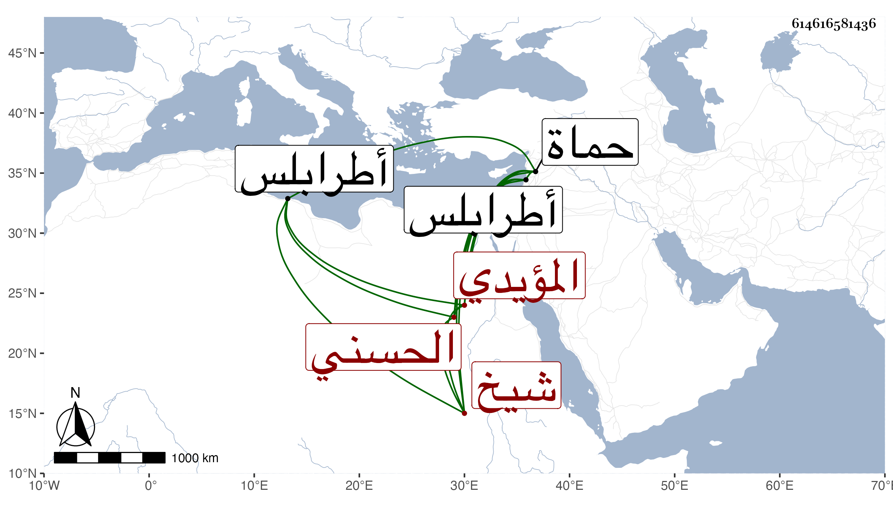

0902Sakhawi.DawLamic.ITO20230111-ara1.EIS1600.614616581436
Biography ID: 614616581436
660
قانباي الحسني المؤيدي شيخ . صار خاصكيا في أيام ابن أستاذه المظفر إلى أن أمره الظاهر جقمق عشرة ثم نقله إلى أتابكية حماه ثم عمله الظاهر خشقدم من الطبلخاناة ثم نائب طرابلس ، ولم يلبث أن تجرد لكائنة سوار وكانت منيته هناك في ربيع الأول سنة اثنتين وسبعين وقد ناهز السبعين ، وكان لا بأس به عارفا بلعب الرمح متحركا .
